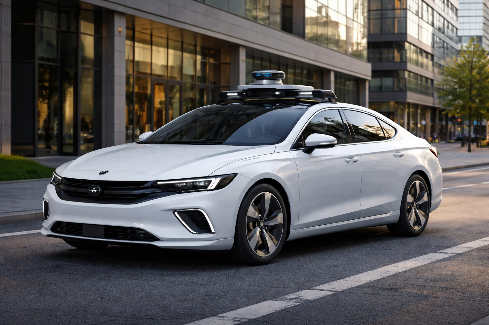
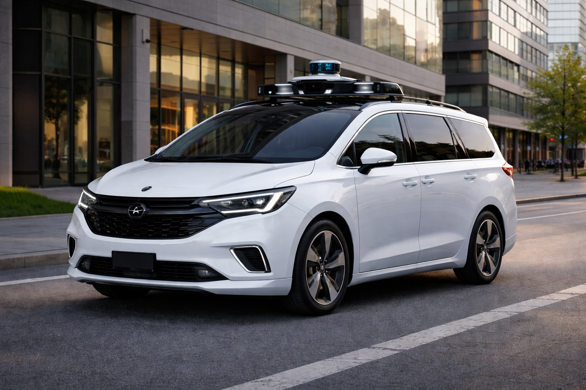
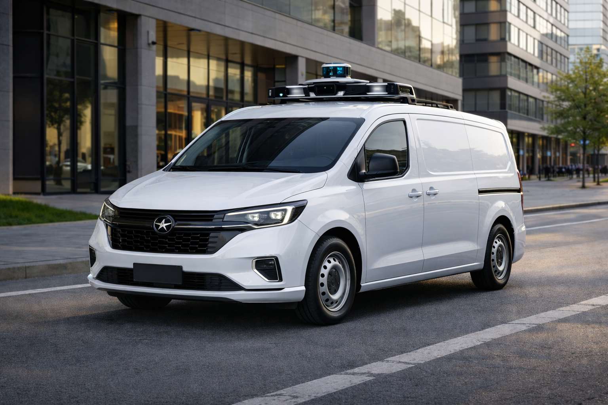

Välkommen till vår grafiska profil
Denna sida visar exempel på vår grafiska profil inklusive färger, typsnitt och layout.
Denna sida visar exempel på vår grafiska profil inklusive färger, typsnitt och layout.
Logotypen har en blå, rund symbol med fyra former som möts i mitten. Den liknar ett hjul eller ett bilmärke, vilket passar bilar. Den blå färgen står för teknik, trygghet och framtid. Texten “RoboCar” är enkel och modern, vilket visar att vårt företag jobbar med självkörande och smarta bilar.
Vår logotyp representerar vårt varumärke och ska användas enligt riktlinjerna nedan.
Logotypen finns i två olika varianter, med text och enbart symbol.
Montserrat är ett modernt och rent typsnitt. Det är lätt att läsa och känns tekniskt och professionellt. Det förmedlar innovation, pålitlighet och framtid, vilket passar vårt företag.
Vi använder följande typsnitt för våra dokument och webbplatser:
Rubriker ska vara tydliga och använda rätt storlek enligt hierarkin.
Brödtext ska vara lättläst och följa linjeavståndet 1.6.
Företagets färgpalett är vald för att förmedla en känsla av teknik, trygghet och framtid. Den blå färgen står för pålitlighet, innovation och stabilitet, vilket passar vårt företag.
Text: mörk på primär
Hex: #87c7ff
Text: primär på mörk
Hex: #87c7ff
Andra viktiga element av den grafiska profilen finns här.
Denna del kan innehålla riktlinjer för ikoner, bildstil, layoutprinciper och andra visuella element som är viktiga för att upprätthålla en konsekvent grafisk profil.
För ikoner så använder vi oss av Google icons. Försök använda svg-filer i html koden om möjligt för störst kontroll. Det går då att applicera färgklasser med css på svg-bilden.
Bilder ska vara högupplösta och följa en konsekvent stil som speglar vårt varumärke.
Undvik överdriven redigering och använd naturliga färger när det är möjligt.



Knappar ska vara tydliga och använda våra primära eller sekundära färger beroende på kontext.